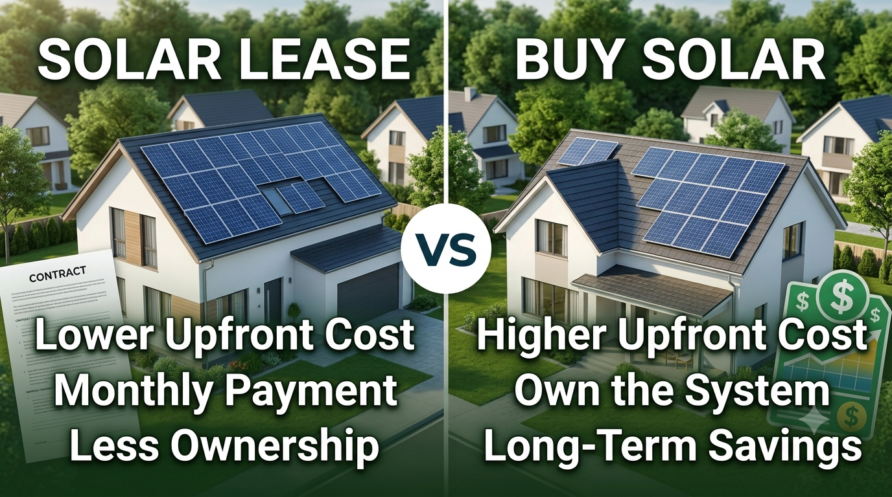

Solar Lease vs. Buying Solar Panels (2026 Guide): Which Is Better for US Homeowners?
Published September 8, 2026 · Updated September 8, 2026

If you are thinking about solar for your home, you will probably hear two very different pitches: “Buy the system and own it” or “Go solar with little or no upfront cost.” Both can sound attractive, but they are built around different financial trade-offs.
That is why the real question is not simply whether solar is a good idea. It is how you want to pay for it, who owns the equipment, and how long you expect to stay in the home.
This 2026 guide breaks down solar leasing vs. buying solar panels in the USA in plain English. We will look at upfront costs, monthly payments, ownership, maintenance, long-term savings, home resale, contracts and the situations where each option can make sense.
Solar Lease vs. Buying: The Short Answer
Buying is often the stronger long-term option for a homeowner who wants ownership, expects to stay in the property for many years and can handle the purchase or financing responsibly. Once the purchase financing is paid off, the homeowner owns the equipment and can continue using the system for the rest of its useful life.
Leasing can be attractive when minimizing upfront spending is the top priority. The solar company or another third party generally owns the equipment, while the homeowner makes payments under a contract. The trade-off is that the homeowner gives up some of the financial benefits and control that come with ownership.
Solar Lease vs. Buy: Side-by-Side Comparison
| Factor | Buy / own the solar system | Solar lease |
|---|---|---|
| Who owns the equipment? | Usually the homeowner. | Usually a solar company or other third party. |
| Upfront cost | Can be significant if paying cash; financing can spread the cost. | Often designed to reduce or eliminate a large upfront payment. |
| Monthly payment | Possible loan payment if financed. | Contractual lease payment. |
| Long-term ownership value | Homeowner keeps the asset after financing is paid off. | No equipment ownership unless the contract includes a purchase option that is exercised. |
| Maintenance | Owner is responsible, although warranties may cover many components. | Often handled by the provider under the lease terms. |
| Home sale | Generally simpler once the system is owned outright. | Lease transfer, payoff or other contract requirements may need to be handled. |
| Control | Highest control over the system and financing. | Provider retains ownership and contractual control over important terms. |
| Best fit | Long-term homeowners focused on ownership and lifetime value. | Homeowners focused on low upfront cost and outsourced equipment responsibility. |
What Happens When You Buy Solar Panels?
When you buy a solar system, the equipment becomes your asset. You can purchase it with cash or finance the project with a solar loan, bank loan, credit-union loan or another suitable financing arrangement.
The biggest advantage is straightforward: you own what you are paying for. If you finance the system, the loan eventually ends while the panels can continue producing electricity. That can make the economics increasingly attractive over a long ownership period.
Advantages of buying solar
- Ownership: You own the panels, inverter and other purchased equipment.
- Long-term savings potential: After financing is paid off, electricity generated by the system can continue reducing your need to buy power from the utility, subject to your utility's rules and system performance.
- More control: You can make decisions about upgrades, battery storage and system changes within applicable warranties, permits and utility requirements.
- Potential incentive eligibility: Depending on current federal, state and local rules and your individual circumstances, ownership may be important for claiming certain incentives. Never assume an incentive applies without checking current official guidance.
- Simpler long-term ownership: An owned system does not carry a third-party lease contract that a future homebuyer may have to assume.
Things to watch when buying
Buying does not mean solar is automatically cheap. The initial project price can be substantial, and financing can add interest and fees. You are also responsible for understanding warranties, inverter replacement risk, roof work, monitoring and other ownership costs.
What Happens When You Lease Solar Panels?
With a solar lease, a third-party provider generally owns the solar equipment installed on your property. You agree to make payments for the use of the system over a contractual period.
The appeal is easy to understand: instead of paying the full system price upfront, you get access to solar equipment while spreading payments over time. Some lease contracts also include maintenance or performance-related services.
Advantages of leasing solar
- Lower upfront barrier: A lease may require little or no large initial payment, depending on the offer.
- Predictable contract structure: You know the payment rules stated in the agreement.
- Less equipment responsibility: Maintenance obligations may be handled by the provider, depending on the contract.
- Useful for certain cash-flow situations: Some homeowners prefer keeping their cash available for other household priorities.
Things to watch with a lease
The lower upfront cost is not the same thing as lower total cost. A lease can extend for many years, and the contract may include payment increases, production assumptions, buyout provisions or transfer requirements.
Most importantly, you generally do not own the equipment. That difference matters when comparing lifetime value and when selling the home.
Upfront Cost vs. Total Cost: The Part Homeowners Should Not Skip
One of the easiest mistakes in solar shopping is comparing only the monthly payment.
Imagine two offers. One says, “$180 per month.” Another says, “$250 per month.” The first sounds cheaper. But what if the first agreement lasts longer, contains an annual payment increase, or includes other charges? The monthly number alone does not tell you which offer costs less.
For a fair comparison, put both options on the same page and calculate:
- Cash price of the solar system
- Total amount financed, if there is a loan
- APR and financing fees
- Monthly payment
- Number of payments
- Total scheduled payments
- Any payment escalator in a lease or PPA
- Maintenance and equipment responsibilities
- Buyout or early-termination costs
- Expected electricity savings, using realistic production and utility-rate assumptions
Solar Lease vs. Solar Loan: They Are Not the Same
This distinction causes a lot of confusion. A solar loan is financing used to buy the system. You borrow money, make loan payments and normally own the equipment.
A solar lease is a contract to use equipment owned by another party. Your payment is governed by the lease rather than a traditional loan structure.
So if two homeowners both say, “I pay $250 a month for solar,” they could have completely different financial arrangements.
If you are considering financing, compare the loan against the cash price and look closely at fees. Our existing Solar Financing USA 2026 guide covers loan structures and financing risks in more detail.
What Happens When You Sell a Home With Solar?
This is one of the biggest practical differences between owning and leasing solar.
If you own the system outright, there is usually no solar contract for the buyer to assume. The solar installation becomes part of the home and its equipment, subject to the applicable ownership and warranty documents.
With a lease, the situation can be more complicated. The provider may require the buyer to qualify for or assume the lease, or the seller may need to buy out the agreement. The exact process depends on the contract and provider.
That does not mean a leased system makes a home impossible to sell. It means the contract becomes part of the transaction, so it should be reviewed early rather than discovered during closing.
Maintenance: Who Handles Repairs?
With an owned system, the homeowner is responsible for arranging repairs outside the scope of applicable warranties. Solar panels generally have long product warranties, while inverters and other electronics can have different warranty periods.
With a lease, maintenance and performance obligations are often part of the provider's contract. That can be valuable for homeowners who do not want to manage equipment issues themselves.
But read the actual agreement. “Maintenance included” does not automatically tell you what happens with roof repairs, storm damage, monitoring problems, inverter replacement, tree shading or equipment removal.
Which Option Is Better for You?
Buying may be better if...
- You expect to stay in the home for a long time.
- You want to own the solar equipment.
- You are comfortable with a cash purchase or a carefully compared solar loan.
- You want the potential long-term value that comes with owning the system after financing ends.
- You want to minimize third-party contract obligations when selling the home.
Leasing may be worth considering if...
- Your biggest concern is avoiding a large upfront payment.
- You prefer a provider to handle many equipment responsibilities.
- You understand the full contract cost and are comfortable with its payment structure.
- You have reviewed the home-sale transfer and buyout rules.
- You value cash-flow flexibility more than equipment ownership.
What About a Solar PPA?
A power purchase agreement, or PPA, is another third-party-owned solar model. Instead of simply paying to use the equipment, the homeowner generally pays for the electricity produced by the system according to the PPA's terms.
For homeowners comparing all three options, think of them this way:
| Model | Who owns the system? | What the homeowner generally pays for |
|---|---|---|
| Buy with cash | Homeowner | Solar equipment directly |
| Buy with loan | Homeowner | Loan used to purchase the system |
| Lease | Third party | Use of the solar equipment under the lease |
| PPA | Third party | Solar electricity produced under the agreement |
There can be good and bad contracts in every category. The name of the product is less important than the actual dollars, obligations and exit rules written in the agreement.
10 Questions to Ask Before You Sign
- What is the system's full cash price before financing?
- Who owns the panels, inverter and battery, if one is included?
- What will I pay in total over the entire contract?
- Does the payment increase over time?
- What maintenance and repairs are included?
- What happens if the system produces less electricity than expected?
- What happens if I sell my home?
- What is the buyout price in year 5, 10, 15 and near the end of the contract?
- Who is responsible if the roof needs replacement?
- Can you show me the same project as a cash purchase, a loan and a lease so I can compare total costs?
Use Realistic Solar Savings, Not the Best-Case Promise
Solar savings depend on much more than the number of panels on the roof. Your utility rate, net-metering or export rules, shading, roof orientation, system size, weather, battery use and household electricity consumption all matter.
For that reason, a trustworthy comparison should use a realistic annual production estimate and current utility rules rather than a guaranteed “zero bill” promise.
If you are still deciding how much solar your home needs, SolarRateHub also has guides on 10kW solar system costs in the USA and home energy systems in the USA.
FAQ: Solar Lease vs. Buying Solar Panels
Is it better to lease or buy solar panels in 2026?
For a homeowner who plans to stay for many years and wants ownership, buying can offer stronger long-term value. Leasing can be useful when low upfront cost and outsourced equipment responsibility are more important. The actual contract numbers should decide the choice.
Do you own solar panels if you lease them?
Usually no. A third-party provider generally owns the equipment during the lease term unless the agreement includes a purchase option that you later exercise.
Is a solar lease the same as a PPA?
No. A lease generally involves payments for use of the equipment, while a PPA generally charges for the electricity produced. Always read the specific contract because structures and terms vary.
What happens to leased solar panels when I sell my house?
The lease may need to be transferred to the buyer, bought out or otherwise resolved according to the agreement. Ask the provider for the exact sale and transfer procedure before signing.
Can I buy a leased solar system later?
Some agreements include a purchase or buyout option, but not all contracts use the same structure. Check the contract for the timing, formula and price of any purchase option.
Is a solar loan better than a lease?
A solar loan gives you ownership while spreading the purchase cost over time. A lease gives ownership to a third party. Which is better depends on your financing terms, expected time in the home, cash flow and priorities.
Final Verdict: Buy or Lease Solar in 2026?
For most homeowners who are comfortable owning an asset and plan to stay in their home for the long term, buying solar—either with cash or well-compared financing—is usually the option worth examining first. Ownership can provide more control and the possibility of continued value after the financing period ends.
A solar lease can still be a reasonable choice when the homeowner strongly values low upfront cost, predictable contractual payments and having the provider handle many equipment responsibilities. But the contract needs to be evaluated as carefully as the solar system itself.
The smartest move is not to ask, “Which option has the lowest monthly payment?” Ask instead: “What will I own, what will I pay in total, and what happens if my plans change?”
Get the cash price, compare the financing, read the lease or PPA terms, and make the decision based on your expected time in the home and realistic energy savings—not a sales pitch.
Helpful Sources
Consumer Financial Protection Bureau — Solar Financing
Consumer Financial Protection Bureau — Solar Energy Loan Consumer Advisory
U.S. Department of Energy — Energy-Related Federal Financial Assistance
Editorial note: SolarRateHub is an independent information website. Solar prices, utility rules, financing offers, incentives and contract terms can change. Verify current details with your utility, lender, solar provider and relevant government agencies before making a purchase or signing an agreement.